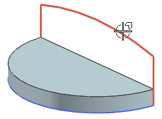
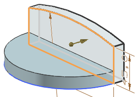
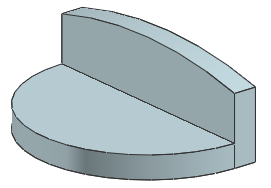

Extrude the back
-
Select the back profile sketch.

-
In the Extrude dialog box, click Reverse Direction
 so the vector points away from the existing solid body (+Y direction).
so the vector points away from the existing solid body (+Y direction).
Tip
You can also reverse the extrude direction by double-clicking the direction handle in the graphics window.
-
In the End Distance box, make sure the value is 15.

-
From the Boolean list, select Unite.
-
Click OK.

-
In the Part Navigator, right-click each of the Extrude features and choose Make Sketch Internal.
You can make a sketch internal if it is only associated with one feature. The sketch can still be accessed when editing the feature.